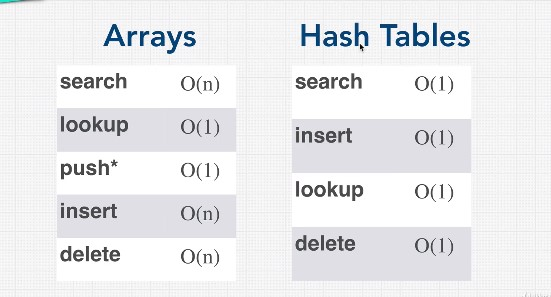

- Hash tables have faster lookups as we can check the key and the memory controller knows exactly which "shelf" to check
- because the elements are not stored in order it takes O(1) to delete and insert elements in hashes and O(n) in arrays as the elements needs to be shifted at the right indexes
- this are the reason the hashes are used in data bases